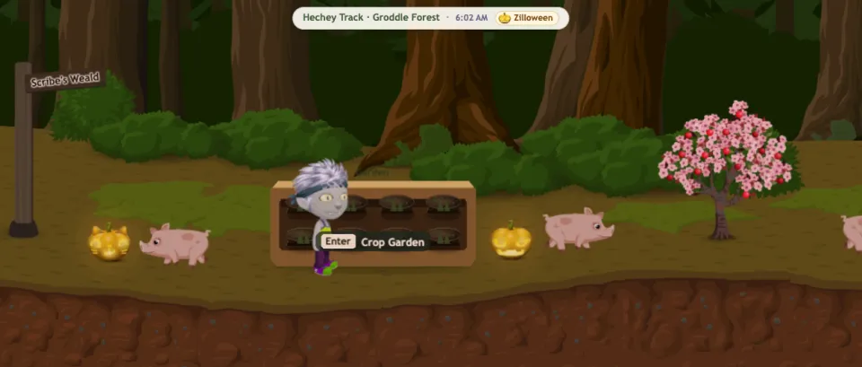
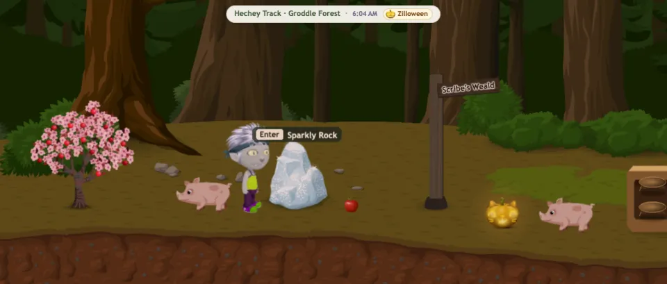
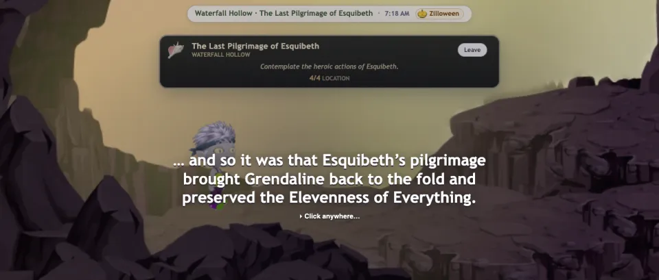
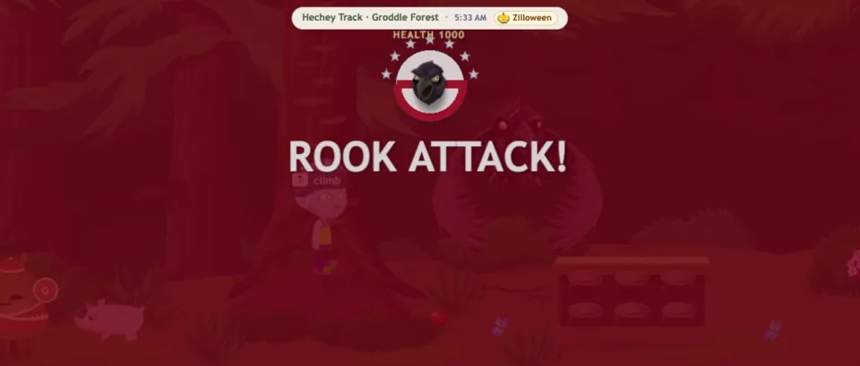
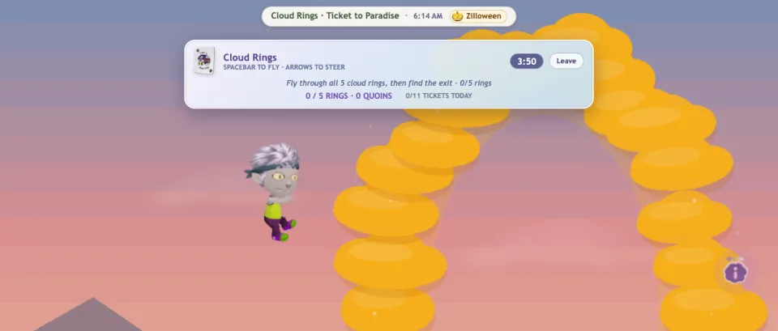
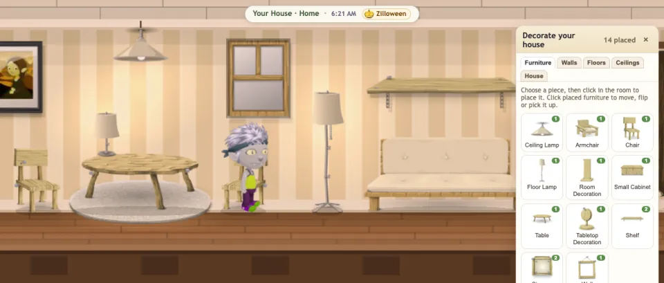

How much of Ur is back
Full restoration report- 52 of 55game systems playable
- 193quests you can play
- 21 of 21private quest rooms rebuilt
- 1,368streets of the world map
- 97 of 105skills to learn
- 367sounds from the original game
Things to do in Ur
-

Grow, harvest and cook
Plant crop gardens, water trants, milk butterflies, then turn it all into meals on a stove or a grill.
-

Mine, make and build
Swing a pick, smelt metal, assemble machines and help build new streets through hundreds of street projects.
-

Quests and secret rooms
Story quests from the Magic Rock, all 21 private quest rooms and pilgrimages, rebuilt from the original rules.
-

Fight off the Rook
When the Rook attacks, prime the shrines, stun it with a Focusing Orb and nurse the street back to life.
-

Paradise and races
Fly through Cloud Rings and Radial Heights, slide down Slip 'N Slide and race the Great Hog Haul.
-

A home of your own
Claim a house, decorate it and raise a tower up to nine floors. Dress your Glitch from 626 pieces of the original wardrobe.
Follow the development
Every rule comes from Tiny Speck's own server code where it survives. Where it doesn't, the quest rooms and streets are rebuilt from players' recordings, the community wiki and archived pages, and each of those rebuilds says so in the restoration report.
- The game runs on Pixi 8.22.0
One Glitch at a time, for now
Glitch was a world you shared. Groddle Afternoon plays on your own: races, Game of Crowns, parties and street projects come with rival and helper Glitches instead of other players. Auctions, chat and groups were all about other people, so they aren't here yet, and the restoration report lists each one plainly.